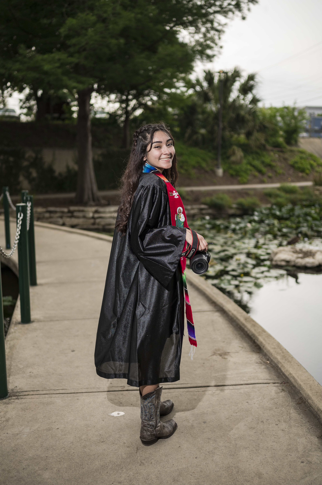

About Me

I started getting into photography because I have always enjoyed looking back at old photo albums with my family and smiling and laughing at the old memories. My family would take a camera everywhere so we could all look back and remember the day we had. Once I started learning how to use a camera I would take pictures of random little bugs or leaves I saw on the sidewalk, but as I got older I started noticing more photography work and it inspired me to change the way I take photographs. In high school, I took a few classes that involved photography but they were more introduction to design and less photography until I found the photo club. At first, I thought there would only be a few people and I would not want to stick around, but I enjoyed being able to openly express my ideas with others that shared the same interests and I became president of the photo club. After graduation, I wanted to be able to help students who don't enjoy photos by making them feel as comfortable being photographed. Click the camera to learn about the camera I use.